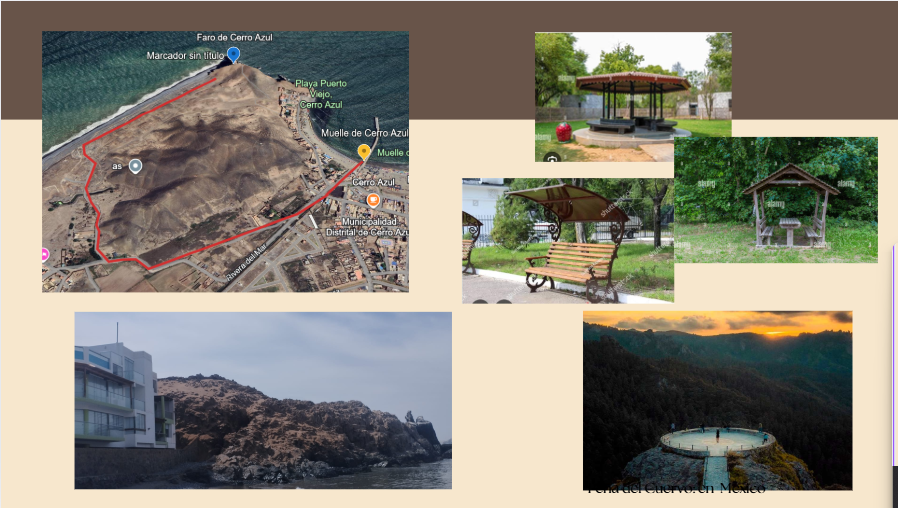

Análisis del Terreno
Realizar un estudio topográfico detallado para identificar las áreas que requieren intervención.
Reducción de Pendientes
Disminuir la inclinación de las zonas más empinadas mediante la construcción de terrazas o rampas.
Accesibilidad
Diseñar un camino adaptado para personas con necesidades especiales, asegurando su comodidad y seguridad.
Protección contra la Erosión
Instalar rompeolas en puntos estratégicos para evitar el deterioro causado por el agua y el viento.
Material del Camino
Seleccionar materiales resistentes a la erosión y de fácil mantenimiento, como piedras, grava o concreto.
Barandillas
Colocar barandillas de madera, cuerda o acero en los puntos críticos para garantizar la seguridad de los visitantes.
Instalación de un Mirador
Diseñar un mirador inspirado en el de Peña del Cuervo, en México, el cual ha demostrado ser una atracción turística exitosa. La ubicación del faro ofrece una vista privilegiada del océano Pacífico en su máximo esplendor. Este mirador permitiría a los visitantes disfrutar de impresionantes atardeceres.
Experiencia del Visitante
La cima del faro regala una vista panorámica espectacular, ideal para los amantes de la fotografía y la naturaleza.
Consejos para la Visita
- Mejor Época para Visitar: Primavera y verano
- Equipo Recomendado: Calzado para senderismo, agua y cámara
- Respeto por la Naturaleza: Mantén limpio el entorno
Sitios de Descanso
Instalar sitios de descanso a lo largo del recorrido sería muy conveniente, especialmente porque, en ciertas temporadas, el calor puede ser sofocante. A continuación, se presentan tres posibles modelos para los sitios de descanso.
Luces con Carga Solar
Instalar iluminación a lo largo del camino utilizando luces LED solares sería una excelente opción para garantizar la visibilidad durante la noche. Este sistema es sostenible, eficiente en el consumo energético y de bajo mantenimiento.
